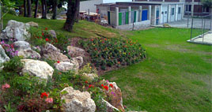
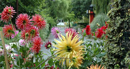

Toute l’année, qu’il pleuve, qu’il vente, que le soleil brûle la terre (rarement) ou que la neige recouvre l’IMED, Claude a toujours quelque chose à faire : Préparer, semer, rouler, couper, planter, arroser, tailler, creuser, et créer.
Pour les 40 ans de l’IMED, il nous réserve d’ailleurs quelques surprises. Nul doute qu’il aura à cœur de nous préparer un jardin extraordinaire.
Claude Yann a commencé sa carrière comme tailleur de pierre. Il n’est pas étonnant que cette première passion lui ait donné quelques idées de décoration de murs…en pierre.
Pas facile pourtant dans un environnement de béton vibré au format industrialisé. Mais Claude est un artiste qui laisse vagabonder son imagination. Personne n’a oublié son inoubliable chaise en pierres, ni les pots de fleurs en ciment dans la pure tradition du facteur Cheval.
A l’affut de nouveautés, inlassable concepteur de constructions hétéroclites, pourfendeur des jardins à la française, il n’aime rien tant que les compositions ou la nature prend elle-même le pouvoir. Et c’est plutôt réussi.

Claude, jardinier à l’IMED depuis plus de vingt ans est parvenu à créer un environnement propice à l’enchantement

Depuis le 23 mars, c’est le printemps. chaque matin, Claude fait le tour du parc, en compagnie d’un collègue, ou d’un animal, ici une chèvre du Poitou adorable, histoire de repérer le travail à faire. Il y en a !
Ou d’imaginer quelque plante rare à planter dans le plus grand secret, au détour d’un chemin, que nous découvrirons au hasard d’une promenade, aux beaux jours. Pas d’hortensias à l’IMED, ni d’iris. Van GOGH doit se retourner dans sa tombe.
C’est que Claude, malgré ses origines bretonnes (DOUARNENEZ), a les idées bien arrêtées concernant la qualité des fleurs. Mais quel enfant en âge d’être scolarisé peut prétendre passer ses journées dans un tel environnement?
Pas de soucis, les enfants respectent vraiment le travail du jardinier. Pas de doute, Claude a aussi mérité leur respect.
Claude fait le tour du parc, en compagnie d’un collègue, ou d’un animal, ici une chèvre du Poitou adorable, histoire de repérer le travail à faire.